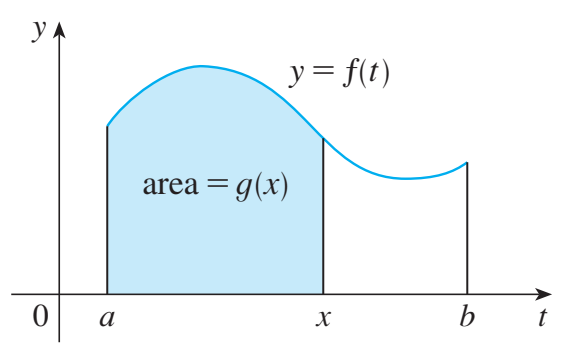
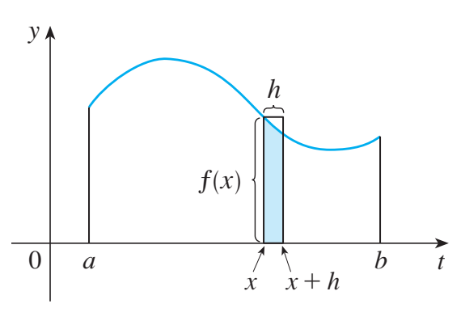
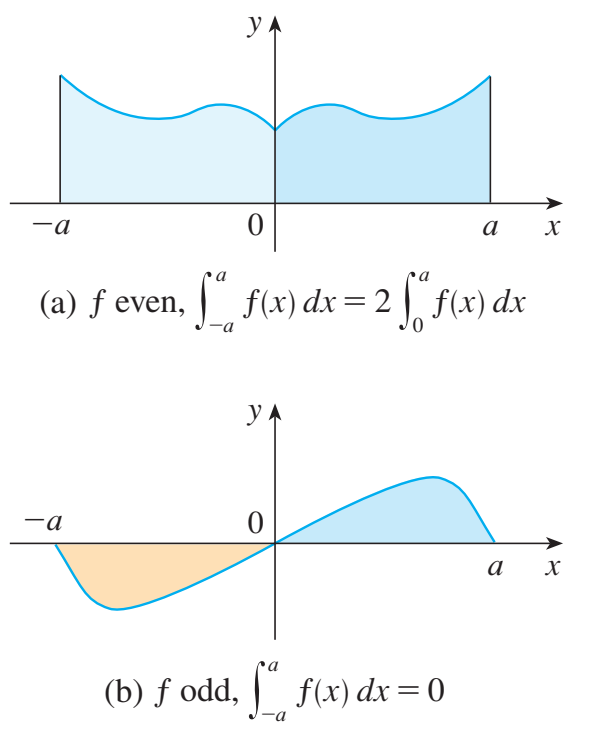

MA1508 Calculus · Chapter 5 · Sections 5.4–5.6
The Fundamental Theorem and Integration Techniques
Connect accumulation with differentiation, then reverse the chain rule and product rule.
Stewart, Single Variable Calculus: Concepts and Contexts, 4th edition, §§5.4–5.6. The original section numbers below identify the textbook material within this lesson.
Stewart 5.4 · printed p. 367A. The Fundamental Theorem of Calculus
1. The Fundamental Theorem of Calculus, Part 1
Precise statement. Let \(a<b\). If \(f\) is continuous on \([a,b]\), define \(A(x)=\int_a^x f(t)\,dt\). Then \(A\) is continuous on \([a,b]\) and differentiable on \((a,b)\), with
The conclusion holds at every interior point \(x\in(a,b)\). At the endpoints the corresponding one-sided derivatives are \(A'_+(a)=f(a)\) and \(A'_-(b)=f(b)\). Thus the accumulated area itself supplies an antiderivative of a continuous \(f\), even when no elementary formula for an antiderivative is available.
What has changed from the first lecture? There we used an antiderivative \(F\), if one was known, to evaluate a definite integral. Part 1 now starts with the Riemann-defined integral and proves that its variable-upper-limit accumulation \(A\) has derivative \(f\).
For \(h\ne0\), \(\{A(x+h)-A(x)\}/h=h^{-1}\int_x^{x+h}f(t)dt\). This is the average of \(f\) over a short interval, including the reversed-limit interpretation for negative \(h\). Continuity makes this average tend to \(f(x)\) as \(h\to0\).
Step 1: continuity of the accumulation function. Continuity of \(f\) on the closed interval implies it is bounded: choose \(M\ge0\) with \(|f(t)|\le M\) for all \(t\in[a,b]\). Additivity and comparison give, for any \(x,y\in[a,b]\),
The right side tends to zero as \(y\to x\). Hence \(A\) is continuous on the entire closed interval, including its endpoints. This estimate uses only the integral properties established in the first lecture.
Step 2: form the difference quotient at an interior point. Fix \(x\in(a,b)\), and take nonzero \(h\) small enough that \(x+h\in[a,b]\). Additivity gives
We used the constant-integral rule \(\int_x^{x+h}f(x)\,dt=f(x)h\); inside this integral, \(f(x)\) is constant with respect to \(t\).
Step 3: use continuity to control the whole short interval. Given \(\varepsilon>0\), continuity at \(x\) provides \(\delta>0\) such that \(|f(t)-f(x)|<\varepsilon\) whenever \(|t-x|<\delta\). If \(0<|h|<\delta\), every \(t\) between \(x\) and \(x+h\) meets this condition. Therefore
For \(h>0\), this is the usual bound over \([x,x+h]\). For \(h<0\), reverse the integration limits first; taking the absolute value gives the same bound with length \(|h|\). Thus the estimate handles both sides, rather than only a picture with a positive strip.
Because \(\varepsilon\) is arbitrary, the difference quotient tends to \(f(x)\):
The same argument with only admissible positive \(h\) at \(a\), or negative \(h\) at \(b\), proves the stated one-sided conclusions.
An integral grows by one thin strip


2. The Fundamental Theorem of Calculus, Part 2
Precise statement. Let \(f\) be continuous on \([a,b]\), with \(a<b\). If \(F\) is continuous on \([a,b]\), differentiable on \((a,b)\), and \(F\prime(x)=f(x)\) for every \(x\in(a,b)\), then
This is the Evaluation Theorem from the first lecture. Part 1 now gives another proof and explains why an antiderivative always exists when \(f\) is continuous.
Let \(F\prime=f\). Part 1 gives \(A\prime=f\), so \((F-A)\prime=0\) on \((a,b)\). The Mean Value Theorem implies that \(F-A\) is constant. Because \(A(a)=0\), that constant is \(F(a)\). At \(b\), \(A(b)=F(b)-F(a)\), which is the Evaluation Theorem.
- Define \(A(x)=\int_a^x f(t)\,dt\). By Part 1, \(A\) is continuous on \([a,b]\) and \(A'=f\) on \((a,b)\).
- Let \(H(x)=F(x)-A(x)\). It is continuous on \([a,b]\), differentiable on \((a,b)\), and \(H'(x)=F'(x)-A'(x)=f(x)-f(x)=0\).
- Apply the Mean Value Theorem to \(H\) between any two points in \([a,b]\). Their values agree, so \(H\) is constant on the entire interval. At \(a\), \(A(a)=\int_a^a f(t)\,dt=0\); hence this constant is \(H(a)=F(a)\).
- It follows that \(F(x)-A(x)=F(a)\), or \(A(x)=F(x)-F(a)\). Evaluating at \(b\) gives \[\int_a^b f(t)\,dt=A(b)=F(b)-F(a).\]
The first lecture proved this endpoint formula directly with a telescoping sum and the Mean Value Theorem on each partition interval. Here the accumulation function provides a second route.
The first identity recovers the current rate from accumulation. The second recovers total change by accumulating a derivative. In each identity use the hypotheses just stated; the symbols alone do not remove those requirements.
Continuity is a convenient sufficient condition. If an integrable function has a jump at \(x\), do not automatically claim \(A\prime(x)=f(x)\) there.
What the continuity hypothesis does
Integrability alone is enough to define \(A\), but does not guarantee \(A'(x)=f(x)\) at every point. For example, let \(f(t)=0\) for \(t<0\) and \(f(t)=1\) for \(t\ge0\), on \([-1,1]\). Then
The accumulation is continuous at 0, but its left derivative there is 0 and its right derivative is 1. It has no derivative at that jump. At every point where this \(f\) is continuous, the conclusion of Part 1 holds. Changing the value of \(f(0)\) would not remove the corner in \(A\).
3. Variable limits require the chain rule
Assume \(f\) is continuous on an interval containing all the integration limits, and that the limit functions are differentiable at the point considered. Write \(A(z)=\int_a^z f(t)\,dt\). By Part 1, \(A\prime=f\); apply the ordinary chain rule to \(A(g(x))\):
Find the derivative of \(H(x)=\int_x^{x^2}e^{-t^2}\,dt\).
Show answerHide answer
- Write \(H(x)=\int_0^{x^2}e^{-t^2}dt-\int_0^xe^{-t^2}dt\).
- Apply the theorem and chain rule to each term: the first gives \(2x e^{-x^4}\), and the second gives \(e^{-x^2}\). No elementary antiderivative is needed.
4. Continuing background: the total becomes a function
For the same arrivals, \(A(t)=\int_0^t6s\,ds=3t^2\) thousand records. Its derivative is the current arrival rate \(A\prime(t)=6t=r(t)\) thousand/hour. Its value \(A(1)=3\) is the total from §5.3. Because the rate is nonnegative, accumulation never decreases.
5. Check your understanding
Let \(G(x)=\int_0^x(1-t^2)\,dt\), for \(x\ge0\). Where does \(G\) increase, and where does it decrease?
Show answerHide answer
- \(G\prime(x)=1-x^2\). It is positive for \(0<x<1\) and negative for \(x>1\).
- The accumulation reaches a maximum at \(x=1\). Adding negative signed contributions after that point decreases it.
Stewart 5.5 · printed pp. 375–380B. The Substitution Rule
Textbook order: a motivating integral → the rule from the Chain Rule → indefinite-integral Examples 1–5 → the definite-integral rule and its proof → Examples 6–8 → symmetry. Original lecture examples remain as additional practice.
1. Why introduce a new variable?
The basic antiderivative table does not immediately evaluate \(\int 2x\sqrt{1+x^2}\,dx\). The expression under the root is complicated, but its derivative appears as a factor outside. This suggests naming the inner expression:
With the whole integrand expressed in the new variable, the calculation becomes
The final answer must return to \(x\). Differentiate it to see why this works:
The factor \(2x\) is exactly the Chain Rule factor. Substitution organizes this reversal of the Chain Rule; the differential notation records the complete factor to replace.
2. The Substitution Rule for indefinite integrals
Precise statement. Let \(g\) be differentiable on an interval \(J\), and let \(f\) be continuous on an interval containing the range \(g(J)\). If \(F'=f\), then
Equivalently, with \(u=g(x)\) and \(du=g'(x)\,dx\),
Continuity of \(f\) provides an antiderivative \(F\) by FTC Part 1. The Chain Rule gives
Thus \(F(g(x))\) is an antiderivative of the original integrand, and adding \(C\) gives the full family on the interval. No division by \(g'(x)\) is needed in this proof.
How to choose \(u\). First look for an inner expression whose derivative is present, up to a constant factor. If this is not obvious, try a complicated part of the integrand. Write \(du\), convert the entire integrand, integrate in \(u\), return to \(x\), and differentiate the result. A substitution can fail to simplify an integral; choosing it is part of the method.
Book Example 1: the derivative factor may differ by a constant
Find \(\int x^3\cos(x^4+2)\,dx\).
Show answerHide answer
- Let \(u=x^4+2\). Then \(du=4x^3\,dx\), so the whole factor \(x^3\,dx\) becomes \(du/4\).
- Substitute and integrate: \[\int x^3\cos(x^4+2)\,dx=\frac14\int\cos u\,du=\frac14\sin u+C.\]
- Return to \(x\): \(\tfrac14\sin(x^4+2)+C\). Its derivative is \(\tfrac14\cos(x^4+2)\cdot4x^3\), which recovers the integrand.
Book Example 2: two substitutions, one antiderivative family
Evaluate \(\int\sqrt{2x+1}\,dx\), on \(x>-1/2\), in two ways.
Show answerHide answer
- First choice: \(u=2x+1\), so \(dx=du/2\). Hence \[\int\sqrt{2x+1}\,dx=\frac12\int u^{1/2}\,du=\frac13u^{3/2}+C=\frac13(2x+1)^{3/2}+C.\]
- Second choice: \(u=\sqrt{2x+1}\). Then \(u^2=2x+1\), so \(2u\,du=2\,dx\) and \(dx=u\,du\). The integral becomes \[\int u\cdot u\,du=\int u^2\,du=\frac13u^3+C=\frac13(2x+1)^{3/2}+C.\]
- The two substitutions give the same family. The first uses the inner linear expression; the second uses the entire square root.
Book Example 3: a negative differential factor
Find \(\int x/\sqrt{1-4x^2}\,dx\) on \((-1/2,1/2)\).
Show answerHide answer
- Choose \(u=1-4x^2\). Its differential is \(du=-8x\,dx\), so \(x\,dx=-du/8\).
- Convert every factor: \[\int\frac{x}{\sqrt{1-4x^2}}\,dx=-\frac18\int u^{-1/2}\,du=-\frac14\sqrt u+C.\]
- Return to \(x\): \(-\tfrac14\sqrt{1-4x^2}+C\). Differentiation gives \(-\tfrac14\cdot\tfrac12(1-4x^2)^{-1/2}(-8x)=x/\sqrt{1-4x^2}\).
Book Example 4: a linear inner function
Calculate \(\int e^{5x}\,dx\).
Show answerHide answer
- Let \(u=5x\), so \(du=5\,dx\) and \(dx=du/5\).
- Then \[\int e^{5x}\,dx=\frac15\int e^u\,du=\frac15e^u+C=\frac15e^{5x}+C.\]
- The coefficient \(1/5\) compensates for the factor 5 produced by the Chain Rule.
Book Example 5: rewrite before choosing the substitution
Calculate \(\int\tan x\,dx\) on an interval where \(\cos x\ne0\).
Show answerHide answer
- Write \(\tan x=\sin x/\cos x\). The derivative of the denominator is the negative of the numerator.
- Let \(u=\cos x\), so \(du=-\sin x\,dx\). Then \[\int\tan x\,dx=-\int\frac1u\,du=-\ln|u|+C=-\ln|\cos x|+C.\]
- Equivalently the answer is \(\ln|\sec x|+C\). Work on one interval avoiding zeros of \(\cos x\); the original integrand is undefined at those zeros.
Additional practice: reverse the chain rule
If \(u=g(x)\) is continuously differentiable and \(f\) is continuous on the relevant range, the chain rule gives the substitution rule. Look for an inner function and its derivative.
Find \(\int2x\cos(x^2)\,dx\).
Show answerHide answer
- Set \(u=x^2\). Then \(du=2x\,dx\), and the integral becomes \(\int\cos u\,du\).
- Integrate and return to the original variable: \(\sin u+C=\sin(x^2)+C\).
- Differentiate the answer: \(\cos(x^2)\cdot2x\), which recovers the integrand.
3. How to use substitution in a definite integral
Substitution can simplify a definite integral by replacing an inner expression with a new variable. The aim is still to calculate one number over a specified interval, so we must keep track of the endpoints as well as the integrand.
For an integral of the form \(\int_a^b f(g(x))g'(x)\,dx\), begin as follows:
- Choose the new variable. Set \(u=g(x)\), usually an inner expression whose derivative appears elsewhere in the integrand.
- Transform the whole integrand. Write \(du=g'(x)\,dx\) and replace the complete differential factor. Express the resulting integrand entirely in \(u\).
- Keep the variable and the endpoints consistent. Either find the antiderivative in \(u\), return to \(x\), and evaluate at \(a,b\); or change the bounds to \(u=g(a),g(b)\) and finish entirely in \(u\).
- Evaluate the endpoint difference. Subtract the lower-endpoint value from the upper-endpoint value. The result is a definite-integral value, so there is no \(+C\) in the final answer.
For example, in \(\int_0^4\sqrt{2x+1}\,dx\), choose \(u=2x+1\), so \(du=2\,dx\) and \(dx=du/2\). The factor \(1/2\) must remain. The two consistent ways to finish this substitution are shown below.
Route A: return to the original variable. Find an indefinite integral, substitute back to \(x\), and then evaluate at the original endpoints. For the square-root example,
Route B: change the endpoints as well. The new variable takes endpoint values \(g(a)\) and \(g(b)\), so finish the calculation entirely in \(u\).
Substitution Rule for Definite Integrals. If \(g\) is continuously differentiable on \([a,b]\), and \(f\) is continuous on an interval containing \(g([a,b])\), then
Let \(F\) be an antiderivative of \(f\). By the Chain Rule, \(F\circ g\) is an antiderivative of \(f(g(x))g'(x)\). Apply the Evaluation Theorem to the original variable:
Apply it again in the new variable:
The endpoint differences agree, proving the rule. The sign of the differential and the order of the new bounds both matter. Under these hypotheses \(g\) need not be increasing or one-to-one; the signed integral records any reversal.
Book Example 6: change the bounds and stay in u
Evaluate \(\int_0^4\sqrt{2x+1}\,dx\) by changing the bounds.
Show answerHide answer
- Use \(u=2x+1\), \(dx=du/2\). When \(x=0\), \(u=1\); when \(x=4\), \(u=9\).
- Therefore \[\int_0^4\sqrt{2x+1}\,dx=\frac12\int_1^9\sqrt u\,du=\left[\frac13u^{3/2}\right]_1^9=\frac{26}3.\]
- We used new bounds with a new variable throughout. There is no need to substitute back to \(x\). The result agrees with Route A.
Book Example 7: decreasing substitutions reverse the new bounds
Evaluate \(\int_1^2 dx/(3-5x)^2\).
Show answerHide answer
- Let \(u=3-5x\), so \(du=-5\,dx\). At \(x=1\), \(u=-2\); at \(x=2\), \(u=-7\).
- Keep the transformed order of the endpoints: \[\int_1^2\frac{dx}{(3-5x)^2}=-\frac15\int_{-2}^{-7}u^{-2}\,du=\left[\frac1{5u}\right]_{-2}^{-7}.\]
- The result is \(-1/35-(-1/10)=1/14\). A positive answer is consistent with the positive original integrand and forward original limits.
Book Example 8: the differential can be a quotient
Calculate \(\int_1^e(\ln x)/x\,dx\).
Show answerHide answer
- Choose \(u=\ln x\), so \(du=dx/x\). The bounds become \(u=0\) and \(u=1\).
- The remaining numerator is \(u\), giving \[\int_1^e\frac{\ln x}{x}\,dx=\int_0^1u\,du=\left[\frac12u^2\right]_0^1=\frac12.\]
- The factor \(1/x\) is the derivative of the chosen logarithm. Replacing only \(\ln x\) and leaving an unrelated \(dx\) would miss this structure.
Additional practice: change the bounds
Evaluate \(\int_0^1 2x/(1+x^2)\,dx\).
Show answerHide answer
- Let \(u=1+x^2\), \(du=2x\,dx\). At \(x=0\), \(u=1\); at \(x=1\), \(u=2\).
- Now integrate \(\int_1^2du/u=[\ln u]_1^2=\ln2\).
Choose one consistent route: change to new bounds and stay in the new variable, or find the antiderivative, return to the old variable, and use the old bounds. Mixing new variables with old bounds gives an incorrect evaluation.
4. Symmetry: a consequence of substitution
On a symmetric interval, an odd integrand satisfies \(\int_{-a}^{a}f=0\); an even integrand satisfies \(\int_{-a}^{a}f=2\int_0^af\). These conclusions require integrability over the full interval.
Precise statement. Suppose \(a>0\) and \(f\) is continuous on \([-a,a]\). If \(f(-x)=f(x)\), then \(f\) is even and \(\int_{-a}^a f(x)\,dx=2\int_0^a f(x)\,dx\). If \(f(-x)=-f(x)\), then \(f\) is odd and \(\int_{-a}^a f(x)\,dx=0\).
Split the interval at 0. On the negative half put \(u=-x\), so \(dx=-du\), and the bounds \(-a,0\) become \(a,0\). Thus
Add the positive half, using the same dummy variable:
For even \(f\), the bracket is \(2f(u)\). For odd \(f\), it is zero. These give the two conclusions. Integrability on the full interval is essential; a singular expression such as \(1/x\) across zero does not acquire an ordinary definite integral by oddness.
Evaluate \(\int_{-2}^2 x^3\cos(x^2)\,dx\).
Show answerHide answer
- \(x^3\) is odd and \(\cos(x^2)\) is even, so their product is odd.
- The integrand is continuous, hence the symmetric signed contributions cancel.
Even functions double; odd functions cancel

Check your understanding
Evaluate \(\int_0^{\pi/2}\sin x\cos x\,dx\).
Show answerHide answer
- Choose \(u=\sin x\), so \(du=\cos x\,dx\), and the new bounds are 0 and 1.
- \(\int_0^1u\,du=[u^2/2]_0^1=1/2\).
Stewart 5.6 · printed p. 383C. Integration by parts
1. Derive the rule
The product rule is \((uv)\prime=u\prime v+uv\prime\). Integrating and rearranging gives integration by parts.
Choose \(u\) so that differentiating it helps, and \(dv\) so that you can integrate it. The point is to make the remaining integral simpler; a mnemonic does not guarantee that.
2. Polynomial times exponential
Find \(\int xe^x\,dx\).
Show answerHide answer
- Choose \(u=x\), \(dv=e^x dx\). Then \(du=dx\), \(v=e^x\).
- \(\int xe^x dx=xe^x-\int e^x dx=xe^x-e^x+C\).
- Differentiate: \((xe^x-e^x)\prime=e^x+xe^x-e^x=xe^x\).
Find \(\int x^2e^x\,dx\).
Show answerHide answer
- Take \(u=x^2\), \(dv=e^x dx\), obtaining \(x^2e^x-2\int xe^x dx\).
- Use the previous result and combine constants: \(e^x(x^2-2x+2)+C\).
3. A logarithm and a repeating integral
Find \(\int\ln x\,dx\) for \(x>0\).
Show answerHide answer
- Treat the integrand as \(\ln x\cdot1\). Choose \(u=\ln x\), \(dv=dx\), hence \(du=dx/x\), \(v=x\).
- The result is \(x\ln x-\int1 dx=x\ln x-x+C\).
Find \(I=\int e^x\sin x\,dx\).
Show answerHide answer
- Parts gives \(I=-e^x\cos x+\int e^x\cos x\,dx\).
- Apply parts to the new integral: \(\int e^x\cos x\,dx=e^x\sin x-I\), up to an integration constant.
- Thus \(2I=e^x(\sin x-\cos x)+C_0\); absorb \(C_0/2\) into \(C\).
4. Integration by parts for definite integrals
If \(u\) and \(v\) are continuously differentiable on \([a,b]\), then
In differential notation, \(\int_a^b u\,dv=[uv]_a^b-\int_a^b v\,du\), where \([uv]_a^b=u(b)v(b)-u(a)v(a)\). Both integrals use the same original variable and endpoints.
Integrate \((uv)'=u'v+uv'\) over the entire interval:
Rearranging gives the definite integration-by-parts formula. The product term must be evaluated at both endpoints; the remaining integral retains its bounds. No arbitrary constant is appended to a definite-integral value.
5. Book Example 6: a reduction formula
Stewart §5.6, Example 6, pp. 386–387. The same reduction also gives a useful definite-integral formula.
For an integer \(n\ge2\), establish the reduction formula
and write its definite-integral form, including the boundary term.
Show answerHide answer
- Write \(\sin^n x=\sin^{n-1}x\sin x\). Choose
\[u=\sin^{n-1}x,\quad dv=\sin x\,dx,\quad du=(n-1)\sin^{n-2}x\cos x\,dx,\quad v=-\cos x.\]
- Let \(I_n(a,b)=\int_a^b\sin^n x\,dx\). Definite integration by parts gives
\[I_n(a,b)=\bigl[-\cos x\sin^{n-1}x\bigr]_a^b+(n-1)\int_a^b\sin^{n-2}x\cos^2x\,dx.\]
- Use \(\cos^2x=1-\sin^2x\). The last integral becomes \(I_{n-2}(a,b)-I_n(a,b)\), so
\[nI_n(a,b)=\bigl[-\cos x\sin^{n-1}x\bigr]_a^b+(n-1)I_{n-2}(a,b).\]Divide by \(n\). This is the definite version of the book’s reduction formula; the same integration-by-parts algebra without bounds gives the displayed indefinite formula, with its arbitrary constant absorbed into the antiderivative family.
- For \([a,b]=[0,\pi/2]\), the boundary term is zero: at \(\pi/2\), \(\cos x=0\); at 0, \(\sin^{n-1}x=0\). Thus, writing \(I_n=\int_0^{\pi/2}\sin^n x\,dx\),
\[I_n=\frac{n-1}{n}I_{n-2},\qquad n\ge2,\qquad I_0=\frac\pi2,\quad I_1=1.\]The endpoints make the product term vanish here; for general endpoints it must remain.
6. Check your understanding
Evaluate \(\int_0^1 xe^x\,dx\).
Show answerHide answer
- Use \(F(x)=(x-1)e^x\).
- \(F(1)-F(0)=0-(-1)=1\).
This section supplies an integration technique. The continuing DS example will use the same concept of weighted accumulation when we compute a mean arrival time in §6.8.